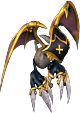
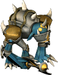
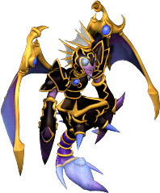

※各怪物的編輯請由標題的鉛筆圖示進行。掉落道具的編輯也可以從掉落道具欄的
帕爾塞斯
庫修隆
盧米納
莉希涅
歐費爾
蓋赫那
戴莫尼翁
１｜２｜３｜４｜５｜６｜７｜獎勵1｜獎勵2｜獎勵3
出現怪物
天空米格爾（藍）
天空米格爾（紅）
阿米倫（綠）
阿米倫（藍）
［阿米倫］
安德拉斯
天空米格爾（藍）
 天空米格爾（藍） | Lv | AC | MC | AAR | SAR | 掉落道具 |
| HP: | 120 | - | - | - | - | 斯坎達倫之寶珠(大)、斯坎達倫之信仰寶珠、帕爾塞斯之耳環寶珠、帕爾塞斯之神聖寶珠、帕爾塞斯之護膝、艾德鎧石、艾德礦石、提爾鎧石、提爾礦石、貝它板、伽瑪板、[1次]各武器3階段升級捲軸 |
| 善惡值 | 信仰值 | 金錢 | 攻擊屬性 | 防禦屬性 | ||
| 26 | 26 | - | - | - | ||
| STR | DEX | INT | WIS | CON | ||
| - | - | - | - | - |
守護鎖定
天空米格爾（紅）
| 天空米格爾（紅） | Lv | AC | MC | AAR | SAR | 掉落道具 |
| HP: | 120 | - | - | - | - | 斯坎達倫之寶珠(大)、斯坎達倫之信仰寶珠、帕爾塞斯之護膝寶珠、帕爾塞斯之寶珠、帕爾塞斯之魔杖、帕爾塞斯之長槍、帕爾塞斯之指虎、帕爾塞斯之豎琴 |
| 善惡值 | 信仰值 | 金錢 | 攻擊屬性 | 防禦屬性 | ||
| 32 | 32 | - | - | - | ||
| STR | DEX | INT | WIS | CON | ||
| - | - | - | - | - |
遠距離
阿米倫（綠）
 阿米倫（綠） | Lv | AC | MC | AAR | SAR | 掉落道具 |
| HP: | 120 | - | - | - | - | 斯坎達倫之寶珠(大)、斯坎達倫之信仰寶珠、帕爾塞斯之耳環寶珠、帕爾塞斯之武器寶珠、帕爾塞斯之神聖寶珠、提爾鎧石、帕爾塞斯之護膝、[1次]各武器3階段升級捲軸、[1次]頭盔3階段升級捲軸、[1次]鎧甲3階段升級捲軸 |
| 善惡值 | 信仰值 | 金錢 | 攻擊屬性 | 防禦屬性 | ||
| 36 | 36 | 552～？ | - | - | ||
| STR | DEX | INT | WIS | CON | ||
| - | - | - | - | - |
備註
阿米倫（藍）
| 阿米倫（藍） | Lv | AC | MC | AAR | SAR | 掉落道具 |
| HP: | 120 | - | - | - | - | 斯坎達倫之寶珠(大)、斯坎達倫之信仰寶珠、帕爾塞斯之耳環寶珠、帕爾塞斯之武器寶珠、帕爾塞斯之護膝寶珠、帕爾塞斯之神聖寶珠、帕爾塞斯之寶珠、帕爾塞斯之匕首、帕爾塞斯之長槍、帕爾塞斯之劍、帕爾塞斯之指虎、帕爾塞斯之斧、帕爾塞斯之豎琴、阿扎爾西斯、智慧炸彈、衝鋒突擊、靈魂反射、波特拉姆魔像召喚、拉克修 |
| 善惡值 | 信仰值 | 金錢 | 攻擊屬性 | 防禦屬性 | ||
| 42 | 42 | 734~? | - | - | ||
| STR | DEX | INT | WIS | CON | ||
| - | - | - | - | - |
破壞治癒
［阿米倫］
| ［阿米倫］ | Lv | AC | MC | AAR | SAR | 掉落道具 |
| HP: | 120 | - | - | - | - | 斯坎達倫結晶、斯坎達倫之寶珠(大)、斯坎達倫之信仰寶珠、帕爾塞斯之護膝、帕爾塞斯之魔杖、帕爾塞斯之彎刀、衝鋒突擊、阿扎爾西斯、靈魂反射、神聖光束、聖騎士守護、波特拉姆魔像召喚、專精 |
| 善惡值 | 信仰值 | 金錢 | 攻擊屬性 | 防禦屬性 | ||
| 62 | 62 | 899～？ | - | - | ||
| STR | DEX | INT | WIS | CON | ||
| - | - | - | - | - |
遠距離
安德拉斯
 安德拉斯 | Lv | AC | MC | AAR | SAR | 掉落道具 |
| HP:- | - | - | - | - | - | 帕爾塞斯之項鍊(全部解除)、帕爾塞斯之耳環(全部解除)、帕爾塞斯之腰帶(全部解除)、不知為何斯坎達倫之護膝（全部解除）、確認過了 |
| 善惡值 | 信仰值 | 金錢 | 攻擊屬性 | 防禦屬性 | ||
| 2000 | 2000 | - | 隨機 | 隨機 | ||
| STR | DEX | INT | WIS | CON | ||
| - | - | - | - | - |
範圍攻擊(固定400傷害) 首領怪物